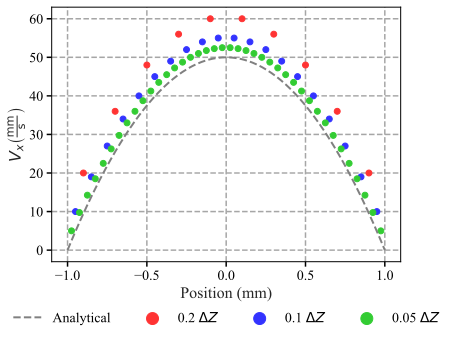
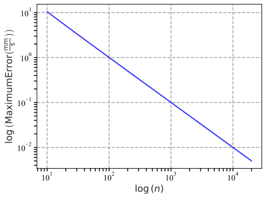
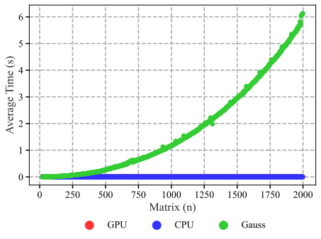

APPM 4600 Final Project
Thomas Algorithm with Gerlakin FEA
Christopher Gonzalez-millan and Aaron Schwan
Thomas Algorithm
Stuff
Gerlakin Method
Stuff
Numerical Results
Stuff

Numerical Approximation

Maximum Errors

All Implementations Comparision

CPU vs GPU implementations
Code
Thomas Algorithm CPU Implementation
def thomas_cpu(half_n: int, eta: float = 1 * pow(10, -5), F: float = -0.001) -> np.ndarray | np.ndarray:
"""
vx,x = thomas_cpu(half_n:int,eta:float = 1*pow(10,-5),F:float = -0.001)
# Explanation
This solves for finite flow in an infintessimal channel using FEA-Gerlikin and
the thomas algorithim. It should be noted due to the no slip condition the edge values
are set to 0 and therefore the matrix does not include endpoints.
# Inputs
* half_n = half the number of elements desired (half to gaurentee an even number)
* eta = coefficient of viscosity (SI units)
* F = force aplied (SI units)
# Outputs
* vx = velocity at each x (1 by n numpy array)
* x = x-axis spacings (1 by n numpy array)
"""
# Index solutions for alpha and beta so matrix creation is no longer necessary.
# Included as subfunctions so the GPU optimization remains unaffected
def beta(i: int):
return (i + 1) / 2
def alpha(i: int):
return (i + 2) / (i + 1)
# Sizing
n = 2 * half_n
# Calculating dz step size
dz = 1 / half_n
# scaling factor
r0 = -F / eta * pow(dz, 2)
# Allocating Memory to matrices creating r and x
vx = np.zeros(n) # velocity
x = np.arange(-1 + dz / 2, 1, dz) # position
# creating vx initial entry
vx[n - 1] = (n) / 2
# Back subsitution of vx
# Due to symmetry only half is solved
for i in reversed(range(int(n / 2), n - 1)):
vx[i] = beta(i) + vx[i + 1] / alpha(i)
# mirroring for full solution
vx[0:half_n] = np.flip(vx[half_n:n])
# Scaled after because this is more efficient
# Returning vx and x
return vx * r0, x
Thomas Algorithm GPU Implementation
@numba.njit
def thomas_gpu(half_n: int, eta: float = 1 * pow(10, -5), F: float = -0.001) -> np.ndarray | np.ndarray:
"""
vx,x = thomas_gpu(half_n:int,eta:float = 1*pow(10,-5),F:float = -0.001)
# Explanation
This solves for finite flow in an infintessimal channel using FEA-Gerlikin and
the thomas algorithim. It should be noted due to the no slip condition the edge values
are set to 0 and therefore the matrix does not include endpoints.
This is not as memory efficent as the cpu version but is focused on speed
# Inputs
* half_n = half the number of elements desired (half to gaurentee an even number)
* eta = coefficient of viscosity (SI units)
* F = force aplied (SI units)
# Outputs
* vx = velocity at each x (1 by n numpy array)
* x = x-axis spacings (1 by n numpy array)
"""
def beta(i: int):
return (i + 1) / 2
def alpha(i: int):
return (i + 2) / (i + 1)
# Sizing
n = 2 * half_n
# Calculating dz step size
dz = 1 / half_n
# scaling factor
r0 = -F / eta * pow(dz, 2)
# Allocating Memory to matrices creating r and x
vx = np.zeros(n) # velocity
x = np.arange(-1 + dz / 2, 1, dz) # position
# reversed list
rev_n = np.flip(np.arange(half_n, n - 1))
# alpha and betas calculations
beta_vals_half = beta(rev_n)
alpha_vals_half = alpha(rev_n)
# creating vx initial entry
vx[n - 1] = half_n
# Back subsitution of vx split into parts for optimization
for i in rev_n:
vx[i] = beta_vals_half[n - i - 2] + vx[i + 1] / alpha_vals_half[n - i - 2]
# mirroring for full solution
vx[0:half_n] = np.flip(vx[half_n:n])
# Scaled after because this is more efficient
# Returning vx and x
return vx * r0, x
Gaussian Elimination Solutions
def generate_stiffness_matrix(half_n: int, eta: float = 1 * pow(10, -5), F: float = -0.001) -> np.ndarray | np.ndarray | np.ndarray:
"""
M,r,x = generate_stiffness_matrix(half_n:int,eta:float = 1*pow(10,-5),F:float = -0.001)
# Explanation
This is for creating matrices for the gauss with pivoting method to solve
It is also applicable to some of the thomas algorithim implimentations just not
the ones in this file. It should be noted due to the no slip condition the edge values
are set to 0 and therefore the matrix does not include endpoints.
# Inputs
* half_n = half the number of elements desired (half to gaurentee an even number)
* eta = coefficient of viscosity (SI units)
* F = force aplied (SI units)
# Outputs
* M = stiffness matrix for a FEM-Galerkin Method (n by n numpy array)
* r = associated solution for M (1 by n numpy array)
* x = x-axis spacings (1 by n numpy array)
# Conditions
* No Slip boundary Condition
* Equation 32.42 32.47 32.37 CHAPTER 32 Finite Element Method
* g^{(0)}-g^{(1)} = \frac{\dp}{\dx}*\frac{1}{2 \eta} (\Delta Z)^2
* -g^{(N-1)}-g^{(N)} = \frac{\dp}{\dx}*\frac{1}{2 \eta} (\Delta Z)^2
* -g^(j-1) + 2g^(j)-g^(j+1) = \frac{\dp}{\dx}*\frac{1}{2 \eta}(\Delta z)^2
* M doesn't change becuase it's based on ratios of the g(j) no the addition
* For solution of -1 to 1
"""
# Sizing
n = 2 * half_n
# Calculating dz step size
dz = 1 / half_n
# Allocating Memory to matrices creating r and x
M = np.zeros([n, n])
r = np.ones(n) * (-F / eta * pow(dz, 2))
x = np.arange(-1 + dz / 2, 1, dz)
# Asembling M by 2 on diagnoals and -1 on 1st off diagonals
for i in range(n):
M[i, i] = 2
if i > 0:
M[i, i - 1] = -1
if i < n - 1:
M[i, i + 1] = -1
# Returns
return M, r, x
def gauss_elimination(A, b):
n = len(A)
M = np.zeros([n, n + 1])
x = np.zeros(n)
# augment matrix
for i in range(n):
for j in range(n):
M[i, j] = A[i, j]
M[i, n] = b[i]
# Fwd elim
for i in range(n - 1):
for j in range(i + 1, n):
val = M[j, i] / M[i, i]
M[j, :] = M[j, :] - M[i, :] * val
# Bck elimination
for i in reversed(range(n)):
temp = 0
for j in range(n):
temp = temp + x[j] * M[i, j]
x[i] = (M[i, n] - temp) / M[i, i]
return x